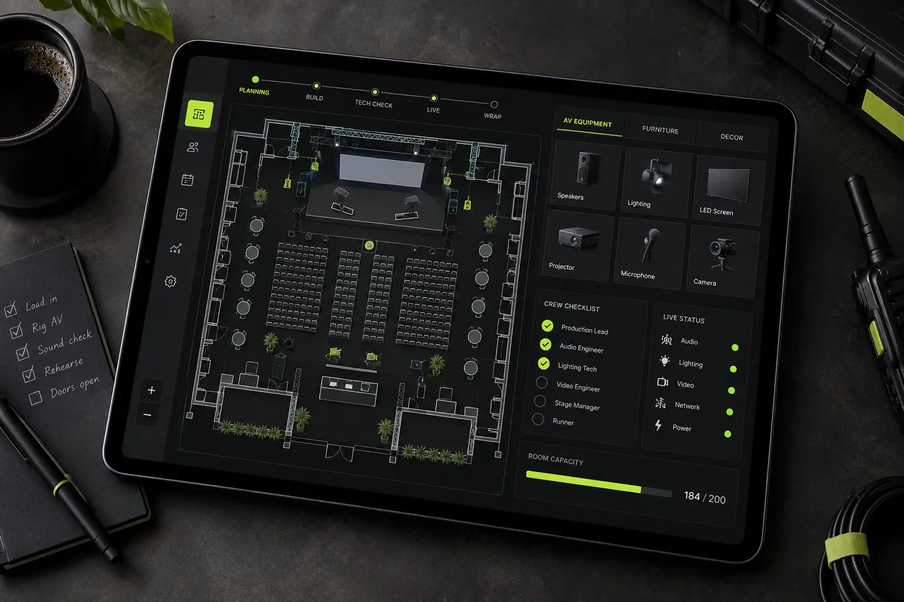

CUE●
Live production,
without the noise.
Production overview
Future Forum 2026
Grand Ballroom · Divani Caravel
TomorrowMedical Summit / Olympia Hall09:00
22 SepBrand Launch / Warehouse 1218:30
Future
Forum
- ✓Audio line checkDONE
- ✓Presentation feedDONE
- 3Camera positionsACTIVE
- !Backup streamCHECK
ONE EVENT.
FIFTY MOVING PARTS.
AV teams work across scattered messages, spreadsheets and paper checklists. Critical information disappears exactly when the pressure rises.
CUE brings schedules, crew, equipment and live status into one shared production workspace.
FROM BRIEF
TO SHOWTIME.
Create event
Venue, rooms and production date.
Build setup
Audio, image, stream and translation.
Assign crew
Clear ownership for every task.
Go live
One real-time production view.
BUILT FOR
FAST DECISIONS.
High contrast, compact information and one signal color keep the interface readable in dark control rooms and bright venues.
Inter / 600
12 / 14 / 18 / 32 / 64
Build your setup
▣LED Wall P2.612 panels selected− 12 +
◫Confidence monitorSamsung 55"− 02 +
⌁HDMI distribution4K / 1×8− 01 +
Crew callLoading dock B
Technical rehearsalAll departments
Doors openLive status enabled
Opening titlesPlayback cue 001
Today’s team
MAMike AndroulakisAV Lead · On site●
NKNikos K.Audio · On site●
ELEleni L.Video · En route◌
GPGeorge P.Streaming · Remote◌
LESS SEARCHING.
MORE CONTROL.
One source of truth for every department.
Faster setup through reusable venue templates.
Clear live status when timing matters most.

CONTROL,
MADE VISIBLE.
Five visual directions extend CUE from interface into onboarding, venue systems and crew communication.
ON CUE.
A launch frame built from real production language.
One signal communicates readiness instantly.
LIVE
Time anchors the visual system on and off screen.
LEAD
Roles and access become one direct badge system.
A→B
Wayfinding connects the app to physical production.